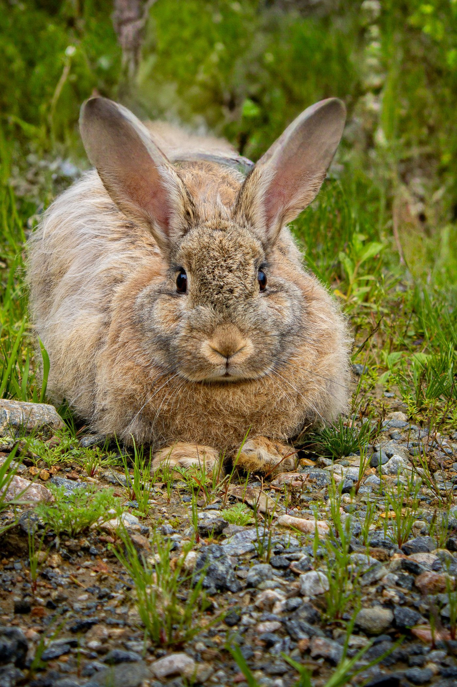

Your voice reaches further than your basket.
Where you shop matters, but what's legal matters more. A ready-made letter to your MP on a live animal welfare issue takes about two minutes to send.

myth vs reality
Tap a card to see the fuller picture. No lectures, just what's actually true behind a few things almost everyone's heard.
Where you shop matters, but what's legal matters more. A ready-made letter to your MP on a live animal welfare issue takes about two minutes to send.